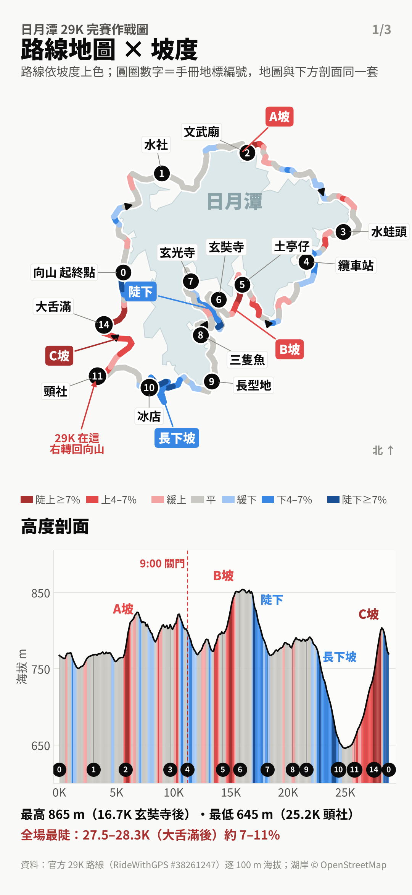

尚未開始
目前里程
0.0K
還剩
28.8 K—
—
坡度
—
海拔
—
目前配速
—
1
—
—
計畫 — 到預計 —
已跑時間
—
對照計畫 4:15
—
照目前進度完賽
—
計畫到此
—
—
前方 2.5K
上方數字＝每 250 m 平均坡度 %；圓點＝每 100 m 資料點
分段配速（目標 4:15，鳴槍時間）
| 區段 | 配速 | 到達 | 底線 |
|---|
紅字「底線」＝ 4:30 剛好關門。目前區段會反白。
四階段
0–12K
暖機存力比目標慢一點，A坡縮步不衝
12–18K
穩爬B坡跑 4 走 1，最高點後陡下小步
18–25.8K
護腿下坡長下坡別衝，留腿給 C坡
25.8–29K
C坡清空快走＋碎步，最後 500m 才衝
能量膠 + 喝水
每顆配 100–150 ml 清水；只在平路吃；每站都喝 1–2 口。
關門與提醒
- 纜車站 11.2K：9:00 關門
- 頭社 25.8K：最晚 10:29，保險 10:25；29K 右轉
- 終點 28.8K：11:05（4h30）
- 只跑靠湖側、靠右；鳴槍計時
- 不舒服就停，舉手找醫護 / AED Runner

兩指縮放、單指拖曳。圓圈數字＝手冊地標編號；顏色＝坡度。
全程剖面・分段紀錄・設定
全程剖面（手動模式可點選位置）
分段紀錄（通過地標自動記下）
| 地標 | K | 時間 | 到達 | vs計畫 |
|---|
設定（只存在這支手機）
跑者名稱
目標完賽時間
震動提醒（吃膠、右轉、關門）
語音提醒（口袋裡也聽得到）
看畫面時螢幕恆亮
亮 / 暗（戶外太亮可切亮色）
使用提醒
- 加到主畫面（Chrome 選單 →「加到主畫面」）會全螢幕、也能離線開。
- 賽前在戶外開一次，確認 GPS 變綠色（約 1 分鐘）。
- GPS 抓不到：按「手動」，點最近看到的地標即可對位。
- 螢幕要保持亮著定位才會持續；用深色、亮度調低、帶行動電源。
- 里程是「落在官方路線上的位置」，跟手錶差一點很正常，以地標為準。
- 跑步時瞄一眼大字就好，提醒會用震動通知你。